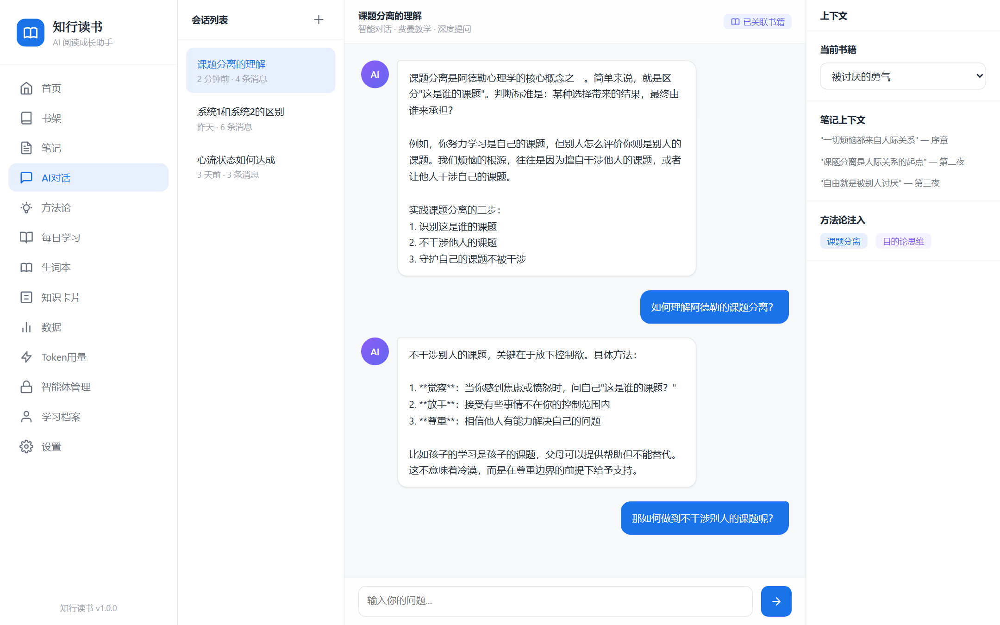
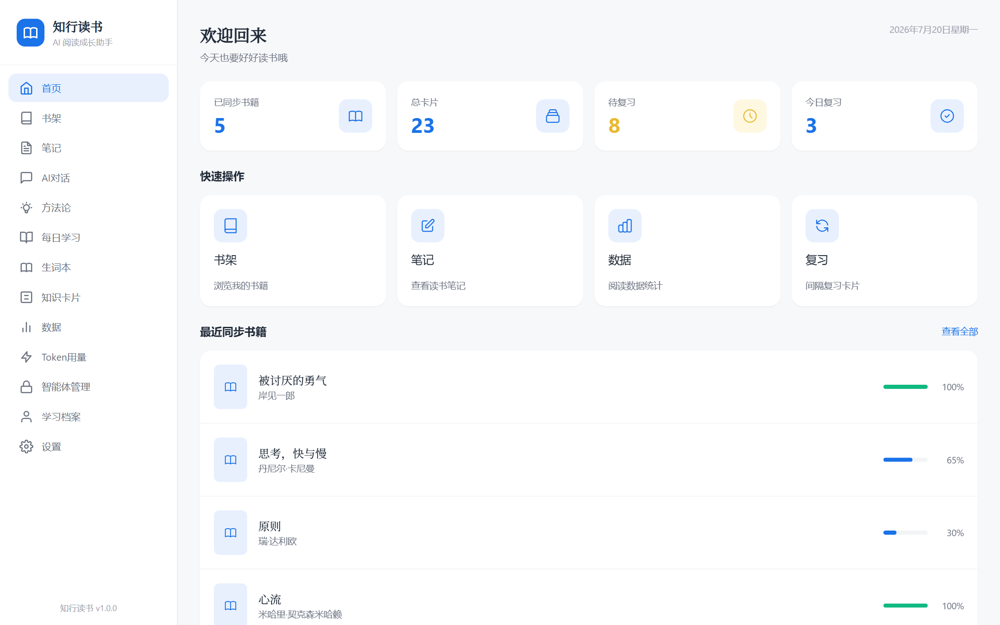
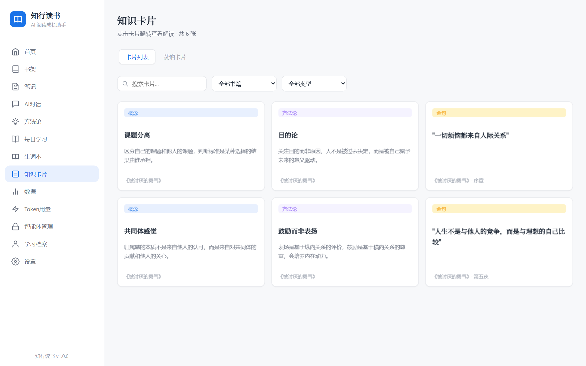
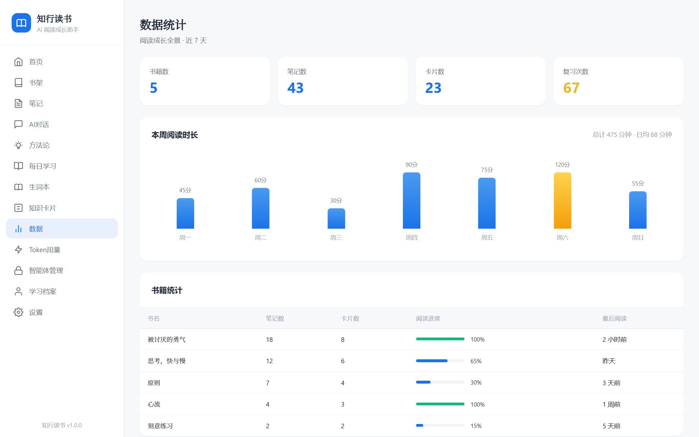
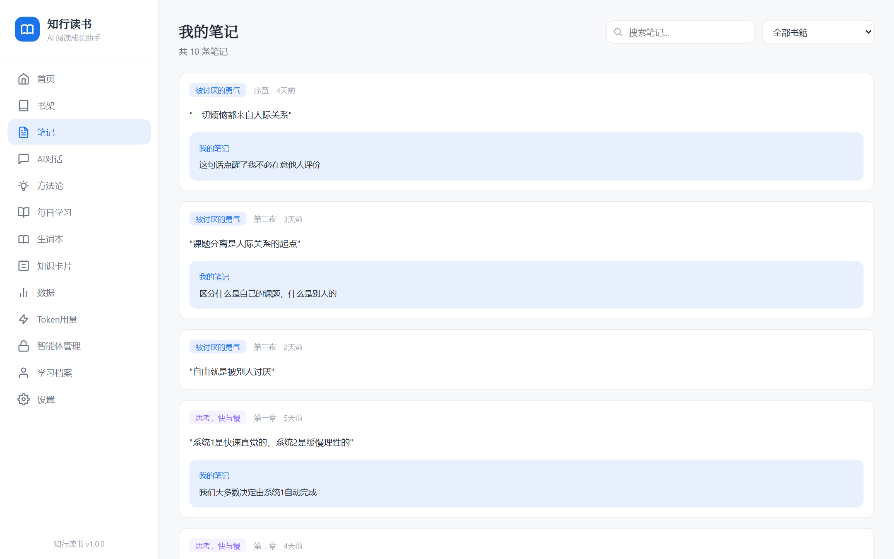
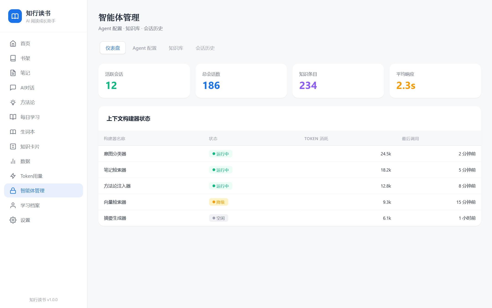
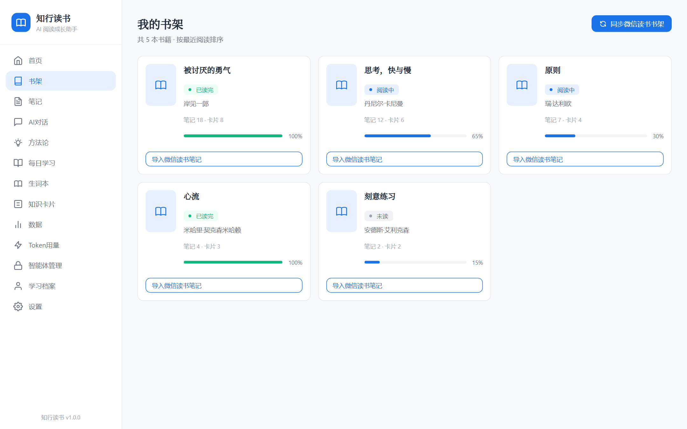
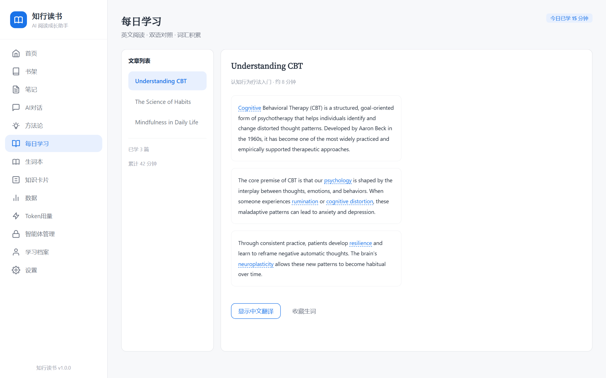
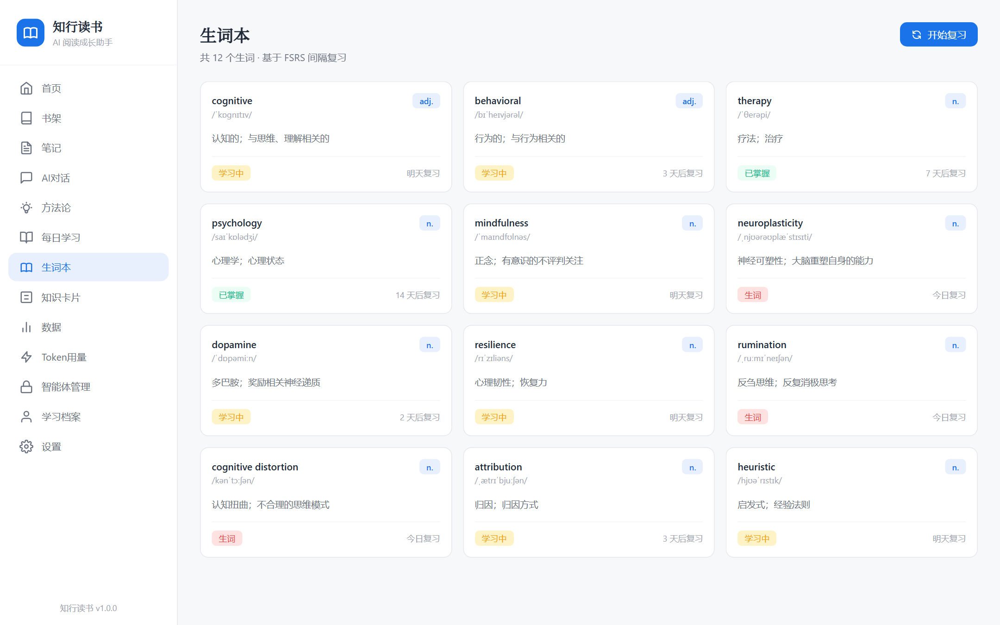

微信读书同步
一键同步书架、划线、笔记、书评。本地持久化存储，数据完全归属用户，断网可用。
AI 驱动的阅读成长智能体
一个把微信读书划线变成知识资产的桌面应用。让 AI 智能体理解你的阅读脉络， 用 Anki 同源的 FSRS v5 算法对抗遗忘，把零散笔记蒸馏成体系化的知识卡片。

v1.0.0 · AI 智能体对话从数据同步到知识内化，让每一本书都不止于读完。微信读书 → AI 智能体 → FSRS v5 → 知识卡片 → 英语学习，一条主线打通整个阅读成长链路。
一键同步书架、划线、笔记、书评。本地持久化存储，数据完全归属用户，断网可用。
5 维上下文构建、意图识别、苏格拉底式教学。AI 不只是回答，更引导你主动思考。
Anki 同源算法（ts-fsrs 5.4.1），DSR 模型科学调度复习时机，用最小时间对抗遗忘。
概念卡 / 方法论卡 / 金句卡三类，AI 自动从笔记蒸馏，构建可检索的个人知识库。
每日精读、查词、生词本。结合 FSRS 算法智能复习生词，阅读中自然习得词汇。
ECharts 5.5 仪表盘，阅读习惯、复习进度、知识分布、Token 用量全维度数据化呈现。
2026 年主流前端栈，TypeScript 全链路类型安全，测试覆盖率优先。所有数据本地持久化，无云端依赖，无追踪 SDK。
667 passing0 errors · 0 warnings91.99% lines · 95.83% functions125.5 MB · NSISMIT · 商用修改分发自由21 参数 · ts-fsrs 5.4.1emerald 主题贯穿始终，深浅模式自适应，专注阅读与思考。下方为 v1.0.0 真实产品截图，未做美化处理。









免费下载，开源透明。本地优先架构，你的阅读数据永远属于你自己。
所有源代码、设计文档、测试用例、构建脚本均公开。欢迎 Star、Fork、Issue、PR。